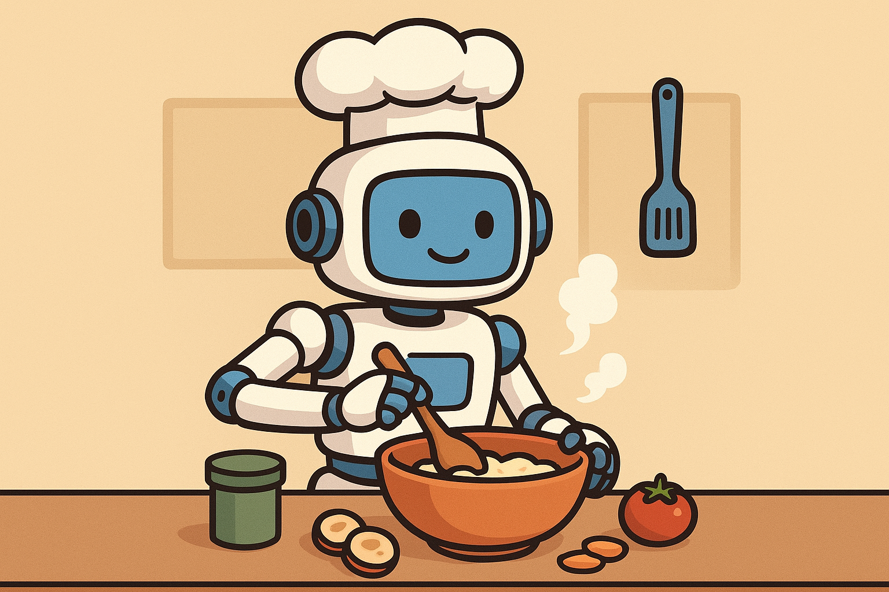

As a HUGE foodie, I was curious to see what kinds of recipes LLMs could generate. More specifically, I’m interested to find out whether it can generate original recipes by combining other various recipes in its training data.
I used gpt-4o for this activity. I gave it the following prompt:
Create a completely original recipe that does not exist on the internet. This recipe should be unique in concept, flavor combination, and preparation method. Provide the following:
Image – Generate a realistic, appealing image of the finished dish.
Description – Write a detailed description of the dish, including: (1) the flavor profiles and textures, (2) the inspiration behind the recipe, and (3) what makes it original.
Recipe – Provide a complete recipe with: (1) a clear list of ingredients (with exact measurements), (2) step-by-step cooking instructions, and (3) tips or notes to enhance the dish.
Please give your recipe a name.
1. Citrus Grove Salmon Bowl
Description
Flavor Profiles & Textures: This dish brings together the richness of seared salmon with the unexpected brightness of citrus and nutty crunch. The salmon has a golden pistachio crust that’s slightly crisp on top, while the flesh remains buttery and flaky inside. It rests on a bed of short-grain rice that has been infused with a light citrus glaze, dotted with diced carrots and green peas for sweetness and freshness. Orange segments add a juicy burst of acidity, balancing the richness of the fish. Fresh basil provides a fragrant, herbal lift.
Inspiration: The inspiration came from the idea of combining three contrasting culinary traditions: the Mediterranean love for pistachios and herbs, Japanese-style rice bowls, and Southeast Asian citrus brightness. Instead of simply serving salmon with lemon, this dish incorporates whole orange segments, allowing the sweetness and acidity to mingle with savory rice and nutty pistachios.
What Makes It Original: Most citrus-salmon recipes focus on glazes or marinades. Here, the originality lies in layering citrus three ways: 1. In the rice (citrus glaze), 2. As garnish (fresh orange segments), and 3. Balanced with herbs and pistachios (creating a nutty-bright contrast).
The result is a dish that feels familiar yet truly novel, with each bite offering a shifting balance of savory, nutty, sweet, and tangy.
Ingredients (Serves 2)
For the salmon:
2 salmon fillets, skin removed (about 6 oz / 170 g each)
2 tbsp olive oil
2 tbsp unsalted pistachios, finely chopped
2 tbsp panko breadcrumbs
1 tsp honey
½ tsp smoked paprika
½ tsp salt
¼ tsp black pepper
For the citrus rice:
1 cup short-grain rice, rinsed
1 ¾ cups water
½ tsp salt
1 tbsp olive oil
½ cup diced carrot
½ cup green peas (fresh or frozen)
2 tbsp fresh orange juice
1 tsp soy sauce
For garnish:
1 large orange, peeled and segmented
2 tbsp chopped pistachios
Fresh basil leaves
Instructions
- Prepare the rice:
- Rinse the rice until water runs clear. Combine with water and salt in a small pot, bring to a boil, then reduce to low, cover, and cook for 15 minutes.
- Meanwhile, heat olive oil in a pan. Sauté diced carrots for 3–4 minutes until slightly tender, then add peas and cook 2 more minutes.
- Once rice is cooked, fluff with a fork and fold in the sautéed vegetables, orange juice, and soy sauce. Set aside.
- Prepare the salmon crust:
- In a bowl, mix chopped pistachios, panko, honey, paprika, salt, and pepper until crumbly.
- Pat salmon fillets dry. Press the pistachio mixture firmly on the top of each fillet.
- Cook the salmon:
- Heat olive oil in a non-stick skillet over medium heat. Place salmon crust-side down first for 2 minutes to lightly crisp the crust, then carefully flip.
- Cook the second side for 4–5 minutes until salmon is golden and just cooked through.
- Assemble the dish:
- Spoon the citrus rice into bowls. Place a salmon fillet on top.
- Garnish with orange segments, a sprinkle of chopped pistachios, and fresh basil leaves.
Tips & Notes
Texture Balance: Don’t skip the quick crisping of the pistachio crust—it creates a caramelized, nutty layer that contrasts with the salmon’s tenderness.
Citrus Variety: Blood oranges or mandarins work beautifully for seasonal variations.
Make It a Meal: Serve with a simple side salad of greens tossed in a light vinaigrette to round out the citrus-herbal theme.
Rice Alternative: Quinoa or farro can replace short-grain rice if you prefer a heartier base.
2. Velvet Halibut
Description
Flavor Profiles & Textures: This dish layers bold contrasts: a pan-seared block of fish (mild and buttery, with a crisp golden crust) sits atop a smooth, roasted carrot–miso purée, which adds sweet depth and savory umami. On top, a warm relish of sautéed red peppers, green onions, and toasted walnuts provides a bright, nutty crunch that cuts through the richness of the fish. The final balance is a play of silky purée, crunchy garnish, tender fish, and a citrusy glaze that ties it all together.
Inspiration Behind the Recipe: The idea came from blending two culinary traditions — the smooth earthiness of root-vegetable purées from classic French cuisine with the miso-based balance of Japanese cooking. Adding a nut-and-vegetable relish on top makes it interactive, bringing texture and color to every bite.
What Makes It Original: 1. Carrot–miso purée (instead of the more common potato or cauliflower base). 2. A warm walnut–pepper relish as a “sauce” substitute, offering crunch instead of liquid. 3. The layering concept: bottom (creamy), middle (meaty fish), top (crisp relish). This creates a three-tier sensory experience in a single forkful.
Ingredients (Serves 2)
For the carrot–miso purée:
3 medium carrots, peeled and chopped (about 250 g)
1 tbsp white miso paste
2 tbsp unsalted butter
½ cup vegetable broth
½ tsp lemon zest
Pinch of salt
For the fish:
2 thick fillets of halibut, cod, or sea bass (about 6 oz / 170 g each)
1 tbsp olive oil
Salt and pepper to taste
For the walnut–pepper relish:
½ cup red bell pepper, julienned
2 green onions, sliced thin
¼ cup toasted walnuts, roughly chopped
1 tbsp olive oil
1 tsp apple cider vinegar
½ tsp honey
Pinch of salt
Finishing glaze (optional but recommended):
1 tbsp fresh orange juice
1 tsp soy sauce
½ tsp honey
Instructions
- Make the carrot–miso purée:
- In a small saucepan, add carrots and vegetable broth. Simmer until very tender (12–15 minutes).
- Blend carrots with miso paste, butter, and lemon zest until silky. Season lightly with salt. Keep warm.
- Cook the fish:
- Pat fillets dry, season with salt and pepper.
- Heat olive oil in a skillet over medium-high.
- Sear fish 3–4 minutes per side until golden crust forms and flesh is just cooked through. Remove and rest.
- Prepare the walnut–pepper relish:
- Heat olive oil in a pan over medium. Add red pepper, cook 3–4 minutes until softened but still vibrant.
- Stir in green onions, walnuts, vinegar, honey, and salt. Toss briefly and remove from heat.
- Optional glaze:
- In the same pan, deglaze with orange juice, soy sauce, and honey. Reduce slightly until glossy.
- Assemble:
- Spread carrot–miso purée as a base on each plate.
- Place fish fillet on top.
- Spoon walnut–pepper relish generously over fish.
- Drizzle with glaze for brightness.
Tips & Notes
Fish choice: Firm white fish works best (halibut, cod, or sea bass). Salmon is also an option for a richer variation.
Purée consistency: Add more broth if you prefer a looser base.
Relish variations: Try hazelnuts or almonds instead of walnuts for different flavor notes.
Make-ahead: Carrot–miso purée can be prepared up to 2 days in advance.
Reflection
Overall, I was a little stunned by these two recipes. While I suppose they are original, they are certainly interesting in not the best possible light. It’s like something a broke college kid might throw together at 2 a.m., then somehow plated like it belongs in a Michelin-star restaurant. The contrast is both impressive and a little confusing. Part of me is curious to see if the flavors actually work in real life, because perhaps there’s some hidden genius in the chaos that is this recipe. It may even be possible that gpt-4o drew from recipes that included these flavor profiles. But really? Orange juice, soy sauce, and honey? Maybe it’s just me and I haven’t tried this end of the flavor pyramid, but it does sound a little far-fetched.
Perhaps one of these days I’ll give one of these recipes a shot in the kitchen to truly put AI to the test, but for now, I think I might keep this one away from the frying pan.